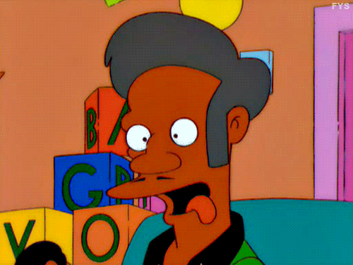
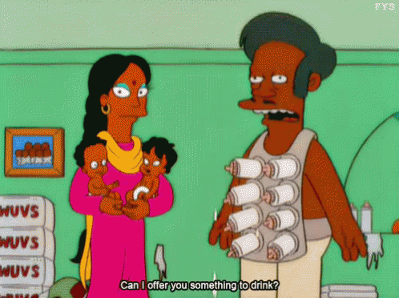
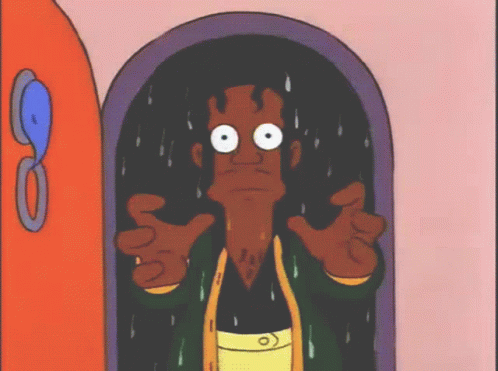
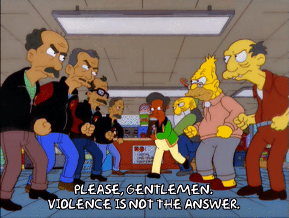
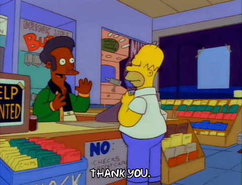
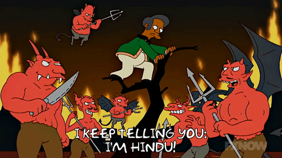

Apu Nahasapeemapetilon
Apun tunnusomaisiin piirteisiin kuuluvat hänen selkeä intialainen aksenttinsa, ainutlaatuinen lähestymistapansa työhön ja hänen tunnuslauseensa "Kiitos, tule uudelleen", jonka hän lausuu jopa silloin, kun joku varastaa hänen kaupastaan tai kohtelee häntä huonosti: "Siinä kaikki! Mene pois täältä... Ja tule uudelleen!" Hän käyttää yleensä vihreää villapaitaa, mustaa poolopaitaa, beigejä housuja ja mustia kenkiä. Apu on melko ylipainoinen ja hänet on nähty myös painonpudotusleirillä.
Hank Azaria
IMDB




